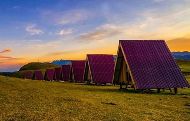
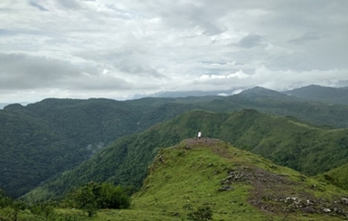
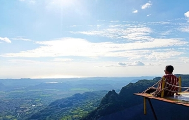
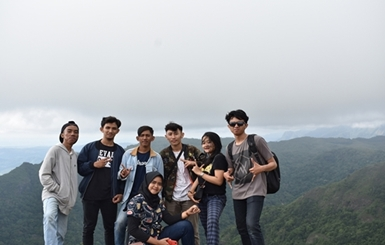
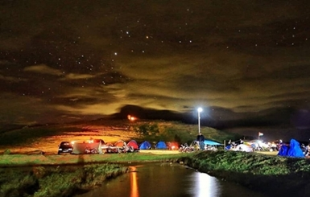
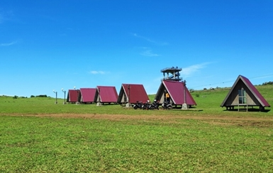
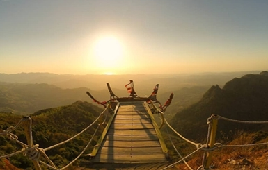

Mengenal Tempat Wisata Lappa’-Laona

Keindahan Destinasi Wisata di Sulawesi memang Jarang tereskpos oleh wisatawan lokal
maupun dari luar negeri,meskipun begitu sebenarnya Sulawesi memiliki banyak sekali destinasi
cantik yang dapat menyilaukan mata,Khususnya di Provinsi Sulawesi-Selatan.
Jika kamu yang tinggal di Selawesi-Selatan atau hendak berkunjung ke Sulawesi-Selatan,
Tidak ada salahnya untuk mencoba Mampir ke Salah satu Destinasi Wisata baru yang ada di Kabupaten Barru ini.
namanya adalah Lappa’-Laona yang memiliki pemandangan cantik layaknya Swiss.
Lappa Laona adalah destinasi wisata sabana menghijau di Dusun Warawue,Desa Harapan,Kecamatan Tanete Riaja,
ketinggian Kab. Barru, Sulawesi Selatan. Berada di ketinggian sekitar 1.000 mdpl, lokasi wisata ini bertajuk
The Green Highland. Diresmikan 13 Mei 2018 oleh bupati Barru,Suardi Saleh.Lokasi eksotis ini berjarak
130 Kilometer dari ibukota makassar atau sekitar 50 kilometer dari pusat kabupaten Barru.
Untuk bisa sampai di Destinasi ini perlu Usaha dan Kesabaran juga sebenarnya,karena jalan yang
ditempuh cukup berat dan akses yang belum memadai.Pastikan bensin Full dan bawa juga berbagai makanan minuman
karena Toko dan SPBU sangat Jarang dan Siap-siap juga untuk Kehilangan Sinyal HP dipertengahan jalan karena
lokasinya yang tinggi dan jauh dari pusat kota.Tapi jangan khawatir,karena Hambatan itu akan terbayar lunas
jika sudah smapai di Tujuan.
Dari puncak perbukitannya, wisatawan dapat menikmati suasana sejuk dan panorama yang menakjubkan dari ketinggian.
Padang rerumputan hijau yang sangat luas memanjakan mata sangat cocok sebagai tempat berkemah.
Selain itu, wisatawan juga dapat menikmati flying fox, camping ground, maupun spot swafoto.
Beragam Kegiatan & Atraksi yang dapat dilakukan di Lappa’-Laona
Keindahan alam tentu merupakan suguhan utama tempat wisata ini. Perbukitan dan lembah hijau menjadi latar utama
bentang alam Lappa Laona. Selain menikmati keindahan alam, berbagai aktivitas lain juga tersedia di kawasan wisata ini.
Berikut beberapa diantaranya.
1. Menikmati udara dari Hamparan Sabana yang Luas

Setelah melewati gerbang pintu masuk, wisatawan akan disuguhi padang rumput yang luas. Nama Lappa Laona memiliki
makna ‘lapangan seluas mata memandang’.
Pemandangan padang rumput yang luas akan menjadi suguhan pertama yang memanjakan mata. Tiba di puncaknya, wisatawan
akan langsung merasa seolah in the middle of nowhere.
Hindari datang pada bulan Agustus untuk menikmati hijaunya sabana yang subur. Pada periode tersebut rumput akan
berwarna kecoklatan karena musim kemarau.
2. Menikmati Panorama di Puncak Bukit

Hawa sejuk akan langsung terasa begitu wisatawan sampai di wisata Lappa Laona. Direkomendasikan untuk menggunakan
pakai hangat dikarenakan suhu udara yang cukup dingin. Luasnya hamparan rumput dan perbukitannya diklaim menyerupai
sabana Gunung Bromo, Jawa Timur.
Berada dekat dengan ibu kota Sulawesi Selatan, tempat wista ini memberikan suguhan alam menyegarkan mata.
Dari puncak kawasan perbukitannya, wisatawan dapat melihat indahnya pemandangan Kabupaten Barru dari ketinggian.
Termasuk melihat pulau Panikiang yang berjarak sekitar 50 kilometer.
3. Bersantai sambil Foto-foto

Lappa Laona memiliki spot swafoto dengan konsep mountain bike park dan uno stones. Pondok-pondok unik berbentuk
segitiga yang berbaris juga menjadi latar yang khas.
Latar utama untuk mengabadikan momen liburan tentu saja panorama indah dari ketinggian. Wisatawan juga dapat
naik ke gardu pandang untuk mendapatkan pemandangan yang lebih luas.
4. Camping

Untuk menikmati waktu berlibur lebih lama, wisatawan dapat menginap di sini. Bermalam di lokasi camping ground
kawasan wisata ini memberikan nuansa menyatu dengan alam.
Wisatawan tak perlu bersusah payah melakukan pendakian terlebih dahulu. Namun suasananya terasa penuh
petualangan dengan berada di alam terbuka layaknya mendaki gunung. Suasana malam yang berangin dengan suhu cukup
dingin memberikan nuansa nyaman di dalam tenda.
Wisatawan dapat membangun tenda di atas bukit untuk menikmati langit malam bertabur bintang. Kota Barru
nampak dalam kilauan lampu-lampu beraneka warna dari ketinggian.
5. Flying-fox diatas Ketinggian 1000Mdpl

Di ketinggian wilayah kabupaten Barru ini, wisatawan dapat menikmati wahana pemacu adrenalin.
Lappa Laona memiliki Flying Fox dengan lintasan sepanjang 270 meter. Meluncur di atas tali baja,
wisatawan akan merasakan sensasi menembus udara di ketinggian.
6. Berburu Moment Sunrise & Sunset

Kawasan wisata ini sangat direkomendasikan untuk menikmati saat tenggelamnya matahari.
Sunset di Lappa Laona begitu memukau dengan deretan awan yang berjalan perlahan dalam
semburat merah.
Wisatawan dapat memilih area tertinggi untuk menikmati keindahan panorama senja.
Angin berhembus menambah kesejukan suasana di puncak bukit.
Selain sunset, kawasan perbukitan ini juga menjadi incaran untuk berburu momen sunrise.
Keindahan matahari terbit menjadi saat yang ditunggu terutama oleh wisatawan yang
berkemah di sini.
7. Bermain bersama Alam
Berbagai aktivitas permainan dapat dilakukan wisatawan. Padang rerumputan yang luas
menjadi lokasi menambah keseruan berlibur. Fun Race and Games acap kali digelar di kawasan
wisata ini.
8.Penginapan Terdekat dari Lokasi Wisata
Penginapan Terdekat
Dikarenakan lokasi tempat wisata lappa’-laona ini sangat jauh dari kota barru’ maka masyarakat setempat ada yang
menyediakan berbagai penginapan sebagai berikut…